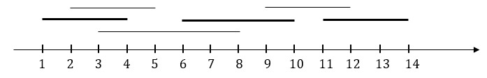

Ca sĩ nổi tiếng Lê Ro vừa nhận được các lời mời lưu diễn của n đoàn ca nhạc. Đoàn thứ i mời lưu diễn từ ngày ai đến ngày bi (ai, bi là các số nguyên, ai ≤ bi). Tuy nhiên tại một thời điểm, Lê Ro chỉ có thể tham gia hát cho một đoàn duy nhất mà thôi. Với mong muốn đem lời ca tiếng hát của mình đến nhiều khán giả nhất, Lê Ro quyết định sẽ chọn tham gia nhiều đoàn nhất có thể. Bạn hãy tính thử xem Lê Ro nên chọn tham gia những đoàn nào để số lượng đoàn là nhiều nhất mà không bị trùng nhau về mặt thời gian.

Dữ liệu vào: gồm 02 dòng
- Dòng thứ nhất là số nguyên n là số đoàn ca nhạc (1 ≤ n ≤ 1.000)
- Trong n dòng tiếp theo, dòng thứ i gồm hai số ai, bi cách nhau một khoảng trắng (1 ≤ ai ≤ bi ≤ 109) là ngày bắt đầu và ngày kết thúc lưu diễn của đoàn thứ i.
Dữ liệu ra:
- Là số nguyên xác định số lượng đoàn nhiều nhất mà Lê Ro có thể tham gia.